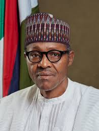

Muhammadu Buhari

Major General Muhammadu Buhari
Muhammadu Buhari is a Nigerian politician, retired major general, and the incumbent president of Nigeria. Before this time, he had served as Head of State from 1983 – 1985 when he was in the Nigerian Army. In addition, he was the former governor of one of the states in North East of Nigeria and one-time Federal Minister of Petroleum..
Muhammadu Buhari Early Life
Muhammadu Buhari was born on December 17, 1942. He was born into a Fulani family in Daura, Northern region (Now Katsina state) by Hardo Adamu and Zulaihat. He is the twenty-third child of his father. He was raised by his mother after the death of his father. And, he spent his early years in Daura before enrolling in a Military college at age 19.